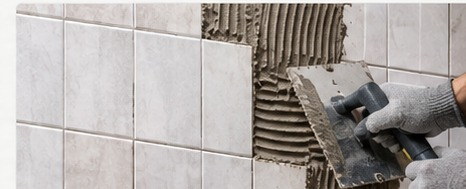

홈 > 타일 시공
SERVICE
타일 시공
욕실과 주방 등 필요한 공간의 타일 상태와 작업 범위를 확인한 뒤 시공합니다. 양주를 중심으로 경기북부 지역 출장 상담을 진행합니다.

욕실타일, 주방타일, 타일시공 작업 안내
욕실과 주방 등 필요한 공간의 타일 상태와 작업 범위를 확인한 뒤 시공합니다.
현장의 상태와 필요한 작업 범위를 확인한 후 작업 방법을 안내합니다. 작업 전 사진을 준비해주시면 상담에 도움이 됩니다.
출장 지역
양주 지역 안내
양주 수전교체, 욕실·화장실 리모델링, 타일, 싱크볼, 방충망, LED 조명 등 생활 집수리를 현장에 맞춰 상담합니다.
의정부 지역 안내
의정부 지역의 방충망 교체, 수전교체, 타일, 욕실 관련 작업과 생활 집수리를 상담합니다.
포천 지역 안내
포천 지역의 욕실리모델링, 타일 시공, 수전교체, 방충망, LED 조명 등 생활 집수리를 안내합니다.
동두천 지역 안내
동두천 지역에서 욕실과 주방의 수전, 타일, 싱크볼, 방충망, LED 조명 등 필요한 집수리를 상담합니다.
연천 지역 안내
연천 지역의 욕실·주방 수리와 방충망, 조명, 타일 등 생활 집수리를 현장에 맞춰 상담합니다.